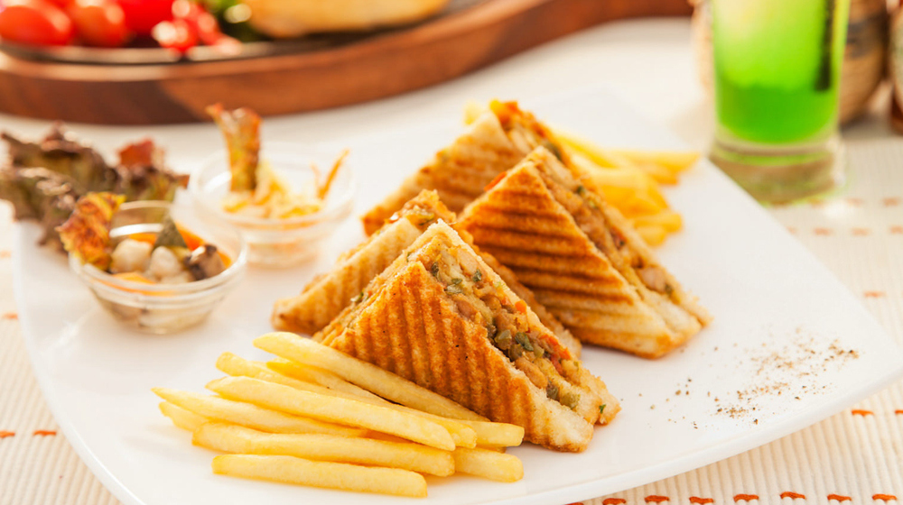
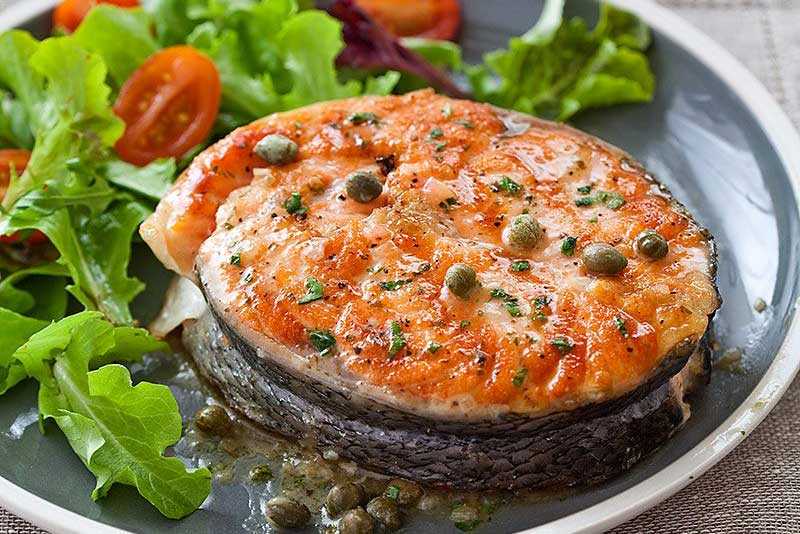

Nasi adalah sebuah bagian penting dari masakan tradisional Tionghoa, menurut catatan sejarah sudah mulai ada sejak 4000 SM. Nasi goreng kemudian tersebar ke Asia Tenggara dibawa oleh perantau-perantau Tionghoa yang menetap di sana dan menciptakan nasi goreng khas lokal yang didasarkan atas perbedaan bumbu-bumbu dan cara menggoreng. Nasi goreng sebenarnya muncul dari beberapa sifat dalam kebudayaan Tionghoa, yang tidak suka mencicipi makanan dingin dan juga membuang sisa makanan beberapa hari sebelumnya. Makanya, nasi yang dingin itu kemudian digoreng untuk dihidangkan kembali di meja makan.
Nasi goreng Indonesia aromanya berbeda dengan nasi goreng dari negara asia lain, baunya lebih bersahaja dan berbau asap, hal ini karena nasi goreng di Indonesia diberi kecap manis atau kadangkala terasi, dan rasanya lebih kuat dan pedas dibanding nasi goreng cina.[4] Nasi goreng biasanya dihidangkan dengan krupuk dan bawang goreng untuk memberikan rasa renyah.
Bahan utama nasi goreng antara lain nasi yang telah masak, kecap manis, bubuk terasi (pasta udang), garam, bawang putih , bawang merah, cabe rawit, daun bawang, pala, kunyit, minyak sayur, bawang merah, gula, pasta jahe, dan irisan mentimun serta tomat untuk hiasan. Beberapa resep bisa menambahkan lada hitam, saus ikan, atau kaldu bubuk sebagai penambah bumbu dan rasa. Telur bisa dicampur menjadi nasi goreng atau digoreng secara terpisah, baik sebagai telur ceplok/telur mata sapi, atau telur dadar (omelet), dan juga telur rebus. Penambahan telur atau tidak biasanya merupakan pilihan, nasi goreng yang dihidangkan dengan telur goreng sering dinamakan nasi goreng spesial atau nasi goreng khusus yang diberi topping telur goreng.
Popular
-

Mengenal makanan untuk menurunkan resiko penyakit jantung
Pilih makanan rendah lemak atau rendah karbohidrat?
-

10 Makanan Khas Indonesia yang Paling Disukai Negara Lain
Makanan Indonesia memang terkenal dengan keasliannya dan bagaimana mereka menunjukkan identitas bangsa.
-

6 Makanan Penyebab Kolesterol Tinggi
Mengonsumsi makanan gorengan atau yang terbuat dari produk susu kerap menjadi pilihan santapan banyak orang dewasa ini.
-

Makanan Enak yang Bisa Hilangkan Stres
Stress merupakan sebuah kondisi yang bisa disebabkan banyak faktor.